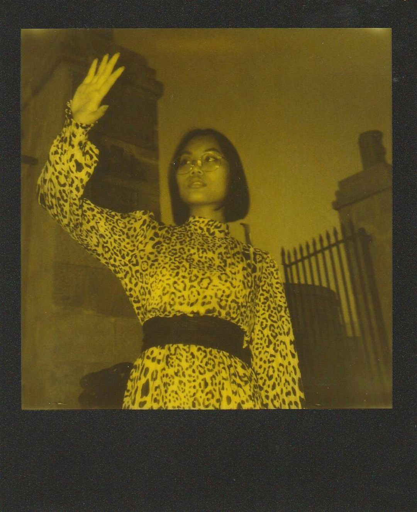

During my time at Aetheria School of Visual Arts, I had the opportunity to intern at Lumina Creative Studio and The Terraform Interiors Collective. These experiences allowed me to see design in action, collaborating with talented professionals and contributing to real-world projects. I learned invaluable lessons about the creative process, from concept development to final execution.
I thrive in collaborative environments, where ideas can bounce and evolve. I love the challenge of taking a concept and translating it into a compelling visual experience. Whether I'm sketching, photographing, or designing, I'm always searching for ways to connect with people on a deeper level through my work.
Right now I am...
asdf to:
Relationships by Haim
Dreaming of:
Gohar World’s dinner parties
Eating at:
Mcdonald’s
Training for:
The NYC Marathon

From graphic design to interior spaces, see the breadth of my creative explorations.
More projects